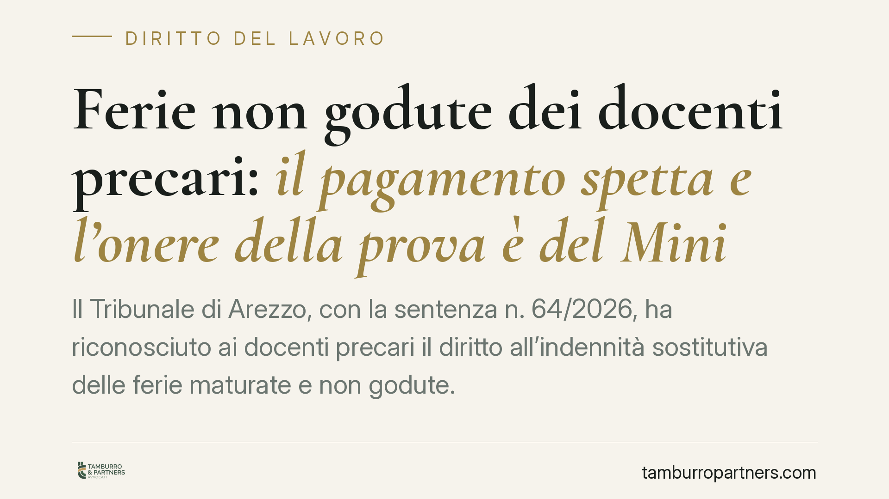

Ferie non godute dei docenti precari: il pagamento spetta e l'onere della prova è del Ministero
Il Tribunale di Arezzo, con la sentenza n. 64/2026, ha riconosciuto ai docenti precari il diritto all'indennità sostitutiva delle ferie maturate e non godute. Il punto rilevante riguarda l'onere della prova: spetta al Ministero dimostrare che l'insegnante ha effettivamente fruito dei giorni di riposo. Una decisione che incide sulle rivendicazioni economiche di migliaia di supplenti.

Il caso
Un'insegnante con contratto a tempo determinato ha chiesto il pagamento dell'indennità sostitutiva per le ferie maturate durante l'incarico e mai fruite. Il Ministero dell'Istruzione ha resistito, sostenendo che i periodi di sospensione dell'attività didattica assorbirebbero le ferie.
Il Tribunale di Arezzo ha respinto questa impostazione. La sospensione delle lezioni non equivale automaticamente a godimento delle ferie: sono istituti giuridici distinti. Le ferie presuppongono una collocazione formale e la volontà del lavoratore di riposare; la pausa didattica risponde invece all'organizzazione del calendario scolastico.
Inquadramento normativo
Il diritto alle ferie è garantito dall'art. 36 della Costituzione, che lo qualifica come irrinunciabile, e dall'art. 7 della Direttiva 2003/88/CE sull'organizzazione dell'orario di lavoro. La Corte di Giustizia dell'Unione europea ha più volte affermato che il lavoratore ha diritto a un'indennità economica per le ferie non godute al termine del rapporto, salvo che il datore dimostri di averlo posto in condizione di fruirne.
Sul piano interno, l'art. 10 del D.Lgs. 66/2003 vieta in via generale la monetizzazione delle ferie, ma la giurisprudenza ammette l'eccezione quando il rapporto cessa e le ferie non sono state materialmente godute. Per i contratti a termine della scuola, la cessazione fisiologica dell'incarico rende impossibile il recupero: da qui il diritto all'indennità sostitutiva.
Rilevante è anche il principio di non discriminazione tra lavoratori a termine e a tempo indeterminato, sancito dalla clausola 4 dell'Accordo quadro allegato alla Direttiva 1999/70/CE. Negare al precario un trattamento riconosciuto al personale di ruolo costituirebbe una discriminazione vietata.
L'onere della prova
L'aspetto più significativo della decisione è la distribuzione dell'onere probatorio. Il Tribunale ha stabilito che non spetta al docente dimostrare di non aver fruito delle ferie, bensì al Ministero provare l'effettiva fruizione.
La ragione è coerente con l'orientamento europeo: il datore di lavoro dispone della documentazione sull'organizzazione del servizio e ha l'obbligo di sollecitare il lavoratore a godere delle ferie. Se non lo fa e non documenta il godimento, deve versare l'indennità.
Questa impostazione alleggerisce notevolmente la posizione processuale del ricorrente, che spesso non ha modo di provare un fatto negativo.
Implicazioni pratiche
Per i docenti precari la sentenza rafforza una linea già presente in altri tribunali di merito. Chi ha svolto supplenze, anche brevi, e non ha fruito delle ferie maturate può rivendicare un compenso economico proporzionato ai giorni residui.
Il calcolo si basa sui giorni di ferie maturati in rapporto alla durata dell'incarico, secondo il criterio del rateo. Occorre quindi ricostruire con precisione periodi di servizio e ferie effettivamente godute.
È bene ricordare che si tratta di una pronuncia di primo grado: non ha valore vincolante generale e il Ministero può impugnarla. Tuttavia si inserisce in un filone giurisprudenziale in consolidamento, sostenuto dai principi euro-unitari.
Va infine considerata la prescrizione: i crediti da lavoro si prescrivono, di regola, in cinque anni. Il termine decorre dalla cessazione del singolo rapporto a termine. Attendere può compromettere il diritto.
Cosa fare in concreto
- Recuperate i contratti di supplenza, i cedolini e ogni documento che attesti i periodi di servizio prestati.
- Ricostruite le ferie maturate e quelle eventualmente fruite, distinguendole dalle sospensioni dell'attività didattica.
- Verificate la data di cessazione di ciascun incarico per calcolare i termini di prescrizione quinquennale.
- Consigliamo di formalizzare una richiesta scritta all'amministrazione prima di intraprendere l'azione giudiziale, così da interrompere la prescrizione.
- Valutate con un professionista la convenienza economica e i tempi dell'eventuale contenzioso.
Disclaimer
Contributo informativo a cura di Tamburro & Partners - Avv. Giuseppe Tamburro. Non costituisce parere legale.
Ogni storia di lavoro ha i suoi tempi.
Se gestisci HR e vuoi un confronto su contenzioso, ispezioni o licenziamenti, scrivi allo studio. Ti rispondiamo entro un giorno lavorativo.